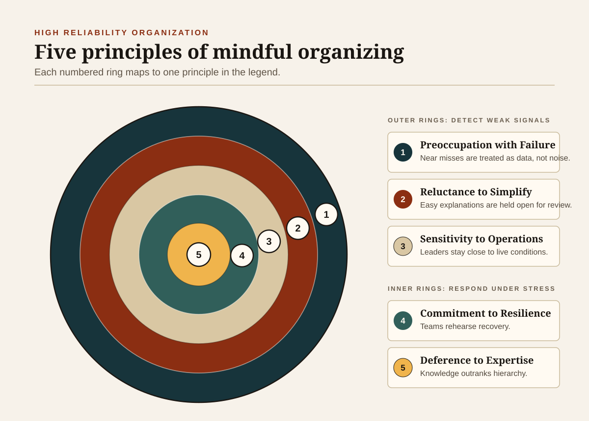

Every profession that operates close to the edge of catastrophe eventually arrives at the same uncomfortable realization: human beings are fallible, and no amount of training, incentive, or moral exhortation will change that in any permanent way. The surgeon who removes the wrong kidney; the nuclear plant operator who disables a safeguard to run a test; the software engineer whose race condition lies dormant in production code for three years — none of these people intended to cause harm. Many were experienced, conscientious, and highly regarded in their fields. And yet disaster followed. The lesson the most reliable industries have internalized, often at enormous cost in lives and treasure, is that safety cannot be secured by improving people alone. It must be engineered into the system around them.
This essay traces the theoretical frameworks, practical techniques, and hard-won lessons that now define the science of preventing catastrophic failure in professional, enterprise, and high-risk environments. It draws on half a century of research in safety science, organizational behaviour, and human factors engineering — disciplines that were, in large part, born from the wreckage of specific disasters.
complications using a
19-item WHO checklist[5]
mortality in the same
WHO-led global study[5]
from the Therac-25 machine
between 1985–1987[8]
The Theory of High Reliability
The academic study of how organizations sustain reliability under conditions of extreme hazard was formalized in the late 1980s, when researchers at the University of California, Berkeley began examining organizations that seemed to violate what probability alone would predict — facilities that operated for decades in inherently dangerous environments with accident rates far below what their complexity and throughput suggested. Aircraft carriers, air traffic control centres, and nuclear power plants became the subjects of intensive fieldwork.
The resulting body of work — High Reliability Organization (HRO) theory — is most closely associated with organizational scholars Karl Weick and Kathleen Sutcliffe, whose book Managing the Unexpected codified what distinguished these facilities from their less reliable counterparts.[1] Their central insight was that reliable organizations do not merely follow better procedures; they cultivate a fundamentally different orientation toward uncertainty, what Weick and Sutcliffe call "mindful organizing."
The five behavioural principles they identified have proven durable across industries, from naval aviation and healthcare to banking and software infrastructure.
-
Preoccupation with Failure HROs treat near-misses and minor anomalies as intelligence, not noise. They recognize that the absence of catastrophe is not proof of safety — it may instead be evidence of luck running out.
-
Reluctance to Simplify The explanation "operator error" is actively resisted. HROs assume that superficially simple explanations mask deeper systemic causes, and they structure their investigations accordingly.
-
Sensitivity to Operations Front-line conditions are monitored in real time. Leaders in HROs maintain what researchers call situational awareness — an ongoing picture of what is actually happening, not what the plan says should be happening.
-
Commitment to Resilience Training focuses not only on avoiding failure but on recovering from it. Resources are continuously allocated to corrective action and rehearsal of edge cases.
-
Deference to Expertise During emergencies, organizational hierarchy is deliberately weakened. Authority migrates to whoever has the most relevant knowledge, regardless of rank.[7]

The Swiss Cheese Model
Parallel to the HRO research, the British psychologist James Reason was developing what would become perhaps the most widely reproduced diagram in safety science. His Swiss Cheese Model, introduced in the early 1990s, offers a structural account of how disasters happen — and, more usefully, how they can be prevented.[2,3]
Reason's central metaphor is elegant: a complex organization's defences against failure resemble a stack of Swiss cheese slices arranged in series. Each slice represents a protective layer — training, procedures, checklists, monitoring systems, software safeguards, physical barriers, peer review. Each layer has holes: inherent weaknesses that vary in size and position as conditions change. Under normal operations, the holes rarely align. A disaster occurs precisely when, by chance or through a cascade of interacting failures, holes in every successive layer line up simultaneously, creating what Reason called "a trajectory of accident opportunity."[3]
"A single sharp-end error is rarely sufficient to cause harm in complex organizations. Instead, such errors must penetrate multiple incomplete layers of defences to cause a devastating result."
Adapted from Reason's systems model of accident causation[2]The practical implications of this model are considerable. If no single layer can be trusted completely, then the strategic response is to multiply the number of independent defensive barriers — and, crucially, to treat any penetration of one layer as a system-wide warning, not as an isolated event. This reframing moves organizations away from blaming individuals toward a forensic interest in which layers failed, why they failed, and how they can be strengthened or supplemented.
The Swiss Cheese Model has been applied in aviation safety, healthcare, nuclear engineering, emergency services, and cybersecurity. It is not without critics — Reason himself later acknowledged that the metaphor can oversimplify non-linear, sociotechnical systems — but it remains arguably the most influential heuristic framework in industrial safety science.[3]
The Pessimist's Theorem: Normal Accident Theory
Not everyone shares HRO theory's cautious optimism. In 1984, Yale sociologist Charles Perrow published Normal Accidents: Living with High-Risk Technologies, a work that offered a darker prognosis for humanity's relationship with complex systems.[4] Perrow's argument was not that accidents result from incompetence or poor culture, but that in certain classes of system, catastrophic accidents are mathematically inevitable.
The theory turns on two independent dimensions. The first is complexity: a system is complex, in Perrow's sense, when its components interact in ways that no single operator can fully foresee. The second is tight coupling: a system is tightly coupled when processes are time-sensitive and interdependent, such that a failure in one component rapidly and irreversibly propagates to others. When both conditions are met simultaneously — as they are in nuclear plants, major financial systems, and large software infrastructures — Perrow argues that the interaction of multiple concurrent failures becomes, over a long enough timeline, statistically unavoidable.[4]
Perrow writes that such failures are "normal" not because they are frequent, but because they are an inherent property of the system. "It is normal for us to die," he observes with characteristic dark pragmatism, "but we only do it once."[4] In systems with catastrophic potential, even the best organizational culture cannot eliminate the underlying risk — it can only manage it and, in some cases, reduce its likelihood. His counsel in extreme cases was radical: some technologies should be abandoned outright. He was explicit that nuclear weapons and nuclear power, given their failure modes, fell into this category.
Normal Accident Theory is not universally accepted — HRO theorists have pushed back on its fatalism — but it has proven influential in risk assessment, systems design, and public policy debates around technologies from genetic engineering to autonomous finance systems.
Practical Techniques: What Actually Works
Between the theoretical frameworks and the postmortems of past disasters, a body of practical technique has emerged — tested over decades in environments where the cost of getting it wrong is measured in lives, not just money. These methods are not exotic. Many are mundane. Their effectiveness lies precisely in their systematic nature.
The Checklist: Underrated and Overwhelming
Of all the tools in the high-reliability toolkit, the simplest and most consistently effective is also the most frequently underestimated: the checklist. The aviation industry pioneered their systematic use after a 1935 Boeing B-17 prototype crash during a demonstration flight — a crash caused not by mechanical failure but by a pilot who, distracted by the aircraft's novel complexity, forgot to release the elevator controls.[6] The response was not additional training, but a pre-flight checklist. Modern commercial aviation has since extended checklist culture across every phase of flight operations.
The case for checklists rests on a straightforward observation about human cognition: expertise does not protect against omission errors. Under stress, with high cognitive load, even highly trained professionals skip steps, misread sequences, and make assumptions that prove catastrophically wrong. Checklists encode the knowledge that matters most into an external, verifiable format that does not depend on memory.[6]
The most compelling evidence for checklists in a non-aviation context came from a collaboration between surgeon and writer Atul Gawande and the World Health Organization. Gawande and his colleagues developed a 19-item surgical safety checklist covering team introductions, antibiotic administration, equipment verification, and other critical steps. The checklist was tested across eight hospitals on four continents — sites in London, Seattle, New Delhi, Amman, Manila, Toronto, Auckland, and rural Tanzania — representing both high- and lower-income health systems. The results were, as Gawande noted, "unprecedented": surgical complications fell by 36%, and inpatient mortality dropped by more than 40% following the checklist's introduction.[5] Published in the New England Journal of Medicine in 2009, the study is one of the most cited in patient safety literature.
Redundancy and Independent Verification
A second foundational principle is the deliberate duplication of critical functions. Redundancy — the installation of backup systems that activate when primary systems fail — is ubiquitous in high-consequence engineering. Aircraft fly with multiple independent flight computers; spacecraft carry redundant communication systems; financial transactions pass through independent validation layers before settlement. The logic is identical in each case: one component failure must not be sufficient to destroy the system.
Closely related is independent verification: the requirement that important calculations or decisions be checked by a person or system with no access to the original work, specifically to eliminate shared blind spots. In bridge engineering, load calculations are independently reviewed before construction begins. In software development, code review serves the same function, though its effectiveness varies substantially with how seriously it is taken. In nuclear facilities, operators must physically sign off on each other's actions at safety-critical junctures. The key word is "independent" — verification by someone who simply re-reads the original work offers far weaker protection than verification by someone who works the problem afresh.
Simulation and Disaster Rehearsal
Commercial aviation's exceptional safety record is in part attributable to the extraordinary investment it makes in training for conditions that, by design, rarely occur. Flight simulators allow crews to practice engine failures, hydraulic loss, wind shear, and cabin depressurization in an environment where the consequences of error are educational rather than fatal. The cognitive effect of simulation is to make the rare event feel familiar — to pre-load the trained response into procedural memory so that it can be executed under the profound stress of an actual emergency.[1]
This approach has migrated across industries. Hospital emergency departments run simulation exercises for mass-casualty events and rare but time-critical conditions. Cybersecurity teams conduct "tabletop exercises" in which participants walk through hypothetical breaches in real time, mapping decision chains and identifying gaps. Financial institutions are required by regulators in many jurisdictions to maintain and test business continuity plans for scenarios ranging from data centre failure to market disruption.
Fail-Safe and Fault-Tolerant Design
A distinct but complementary engineering tradition is the design of systems that fail safely — meaning that when a component fails, the failure state is one that prevents harm rather than enabling it. Train brakes that default to engaged when power is lost; pressure relief valves that vent before a vessel can rupture; nuclear plant control rods that drop automatically when coolant pressure drops below threshold: all embody the same principle. The system is designed around the assumption that components will fail, and that the design task is to choose which failure mode is acceptable.
Fault tolerance extends this to software systems. A fault-tolerant architecture ensures that the failure of one node, service, or data centre does not bring down a system that depends on it. Cloud infrastructure, distributed databases, and microservices architectures are partly motivated by this principle — though, as large-scale outages at major technology companies periodically demonstrate, distributed systems introduce their own failure modes.
Postmortems and Root Cause Analysis
After an incident occurs, the question that a safety-conscious organization asks is not "who screwed up?" but "how did the system allow this to happen?" This reframing — from blame to systemic inquiry — is the defining characteristic of what safety researchers call a just culture: one that balances individual accountability with the recognition that errors almost always have structural antecedents.[3]
Effective postmortems collect detailed timelines, identify contributing factors at every level of the organization, and produce specific, actionable recommendations for system redesign. They are shared transparently, both internally and — in some industries — externally, so that other organizations can learn from the failure. Aviation's mandatory incident reporting systems, managed in many countries by national safety boards, are exemplars of this approach. The data they generate has contributed directly to commercial aviation becoming the safest form of long-distance travel in human history.
| Technique | Core Mechanism | Primary Domains |
|---|---|---|
| Checklists | Externalizes memory; prevents omission under stress | Surgery, aviation, nuclear |
| Redundancy | Backup systems absorb single-point failures | Aerospace, finance, software |
| Independent verification | Eliminates shared blind spots | Engineering, medicine, software |
| Simulation and drills | Pre-loads rare events into procedural memory | Aviation, military, healthcare, cyber |
| Fail-safe design | Failure defaults to safe state | Industrial, rail, nuclear, software |
| Standard operating procedures | Reduces improvisation; decreases variance | Cross-domain |
| Postmortems and RCA | Identifies systemic causes; enables redesign | Cross-domain |
| Formal verification | Mathematical proof of software correctness | Aerospace, cryptography, chip design |
The Creeping Danger: Normalization of Deviance
Among the most insidious failure modes in high-stakes organizations is one that operates not through a sudden breakdown but through a gradual drift — a process in which practices that were once recognized as unacceptable become normalized through routine tolerance. Columbia University sociologist Diane Vaughan coined the term "normalization of deviance" to describe this dynamic, in her landmark 1996 study of the Space Shuttle Challenger disaster.[7]
The Challenger exploded 73 seconds after launch on January 28, 1986, killing all seven crew members. The proximate cause was the failure of rubber O-rings in the joints of the solid rocket boosters — seals that were known to perform poorly in cold weather, and that had shown signs of damage on previous flights. Engineers at the rocket manufacturer, Morton Thiokol, explicitly advised against launching in the freezing overnight temperatures at Kennedy Space Center. NASA management overruled them.
What Vaughan found in the archives was more disturbing than simple managerial recklessness. The engineers and managers at NASA had repeatedly observed O-ring erosion on previous flights and had, each time, concluded that because nothing catastrophic had happened, the damage was within acceptable limits. Over years of launches, an anomaly that should have halted the programme had been gradually reclassified, not through deliberate decision but through accumulation of apparently uneventful precedent, as normal. "No safety rules were broken," Vaughan writes. "No single individual was at fault. Instead, the cause of the disaster is a story not of evil but of the banality of organizational life."[7]
"When repeatedly faced with evidence that something was wrong, NASA insiders normalized the deviance so that it became acceptable to them."
Diane Vaughan — The Challenger Launch Decision (1996)[7]Normalization of deviance is not unique to space programmes. It appears wherever organizations face schedule pressure, resource constraints, or competitive incentives that make it easier to tolerate a known risk than to address it. The Deepwater Horizon disaster of 2010 offers a more recent example: cost pressures, deferred maintenance, and a culture in which safety concerns were routinely subordinated to production targets contributed to an explosion that killed eleven workers and produced the largest marine oil spill in United States history. Investigators found that warning signs had been ignored or minimized for months before the blowout.[9]
Software's Uncomfortable Lessons
The computing industry was relatively late to engage seriously with safety science, and the consequences of that delay were, in some cases, measured in human lives. The Therac-25 case remains the canonical cautionary tale of what happens when software safety is treated as an afterthought.
The Therac-25 was a radiation therapy machine manufactured by Atomic Energy of Canada Limited and deployed in hospitals across North America from 1982. Its predecessors, the Therac-6 and Therac-20, had included hardware interlocks — physical safety mechanisms that operated independently of the software and prevented the machine from delivering dangerous doses. When the Therac-25 was developed, those hardware interlocks were removed, replaced by software controls. The software was written by a single programmer in assembly language, without timing analysis or documented safety procedures, largely adapted from earlier code.[8]
Between June 1985 and January 1987, the Therac-25 massively overdosed at least six patients. Each overdose was many times the normal therapeutic dose. Several patients died; others suffered severe and permanent injuries. The mechanism was a race condition — a subtle software bug in which the timing of two concurrent processes, in certain specific sequences of operator input, caused the machine to set the beam intensity without activating the physical beam collimator, delivering a raw, unscattered electron beam directly into the patient's body.[8]
Compounding the software failure was an interface design failure: the machine displayed only a cryptic error message when the malfunction occurred, and a simple keypress would restart the session, allowing the overdose sequence to repeat. Operators, accustomed to error messages that meant nothing consequential, continued treatments. Patients reported sensations of heat and shock; technicians found nothing wrong with the machine. The company's initial responses to accident reports insisted that the error was impossible.[8]
The lessons of the Therac-25 were catalogued in detail by computer scientist Nancy Leveson and her collaborator Clark Turner in a 1993 paper that remains required reading in software engineering courses: no single developer should own a safety-critical system; hardware interlocks must not be replaced by software controls without equivalent rigor; testing must account for concurrency and timing; and manufacturers must take field reports of anomalous behaviour seriously from the moment they are received.[8]
Challenger (1986)
O-ring erosion normalized over previous flights; management overrode engineering objections; schedule pressure subordinated safety margins. Coined the concept of normalization of deviance.
Chernobyl (1986)
A safety test was conducted with inadequate preparation; operators disabled automated safeguards; reactor design had known instabilities; hierarchy suppressed dissent. Cultural and technical failures compounded each other catastrophically.
Therac-25 (1985–1987)
Hardware interlocks removed; software race condition undetected; single programmer, no safety audit; cryptic interface; manufacturer denial of field reports. Six radiation overdoses, multiple fatalities.
Deepwater Horizon (2010)
Cost pressure overrode safety protocol; deferred maintenance on critical systems; warning signs ignored in the hours before blowout; cascading technical failures met inadequate emergency response culture.
Air France 447 (2009)
Automation dependency; aircrew unprepared for sensor failure edge case; cognitive overload in a high-stress upset; inadequate training for manual flight at altitude. All 228 aboard perished.
Three Mile Island (1979)
Confusing control room interface; alarm flood; operators misread indicator displaying valve status; human factors failures interacted with poor alarm management to produce partial meltdown.
The Pattern Beneath the Wreckage
Examined across industries and decades, catastrophic failures share a structural signature that is by now well understood, even if it remains difficult to act against consistently. They are almost never caused by a single person making a single catastrophic mistake. They emerge, instead, from the confluence of multiple smaller failures, organizational pressures, and communication breakdowns that collectively erode the defensive layers that were supposed to prevent exactly this outcome.
The pattern typically involves at least some of the following elements: warning signs that were present but were attributed to noise or normalized as acceptable; hierarchy or culture that made it difficult to raise concerns; schedule or cost pressure that made tolerating known risks feel justified; interface or information design that obscured the true state of the system; and a final triggering event that, in isolation, would have been entirely manageable if not for the prior erosion of defences.
This pattern is why contemporary safety science places such emphasis not on individual behaviour but on system design, organizational culture, and the conditions in which people work. The human factors tradition, associated most prominently with cognitive scientist Donald Norman's work on interface design, argues that most so-called "human errors" are more correctly understood as design errors — failures of the system to account for predictable human limitations under realistic operating conditions.[10] The worker who misreads an ambiguous gauge under time pressure is responding predictably to an environment that was designed without adequate understanding of how human beings actually process information under stress.
The implication is not that individuals bear no responsibility. It is that building accountability structures around individuals, without simultaneously examining and improving the systems in which they work, will reproduce the same errors under slightly different circumstances. The question that distinguishes a mature safety culture from a punitive one is precisely the one posed by postmortem frameworks: not "who screwed up?" but "how did the system permit this, and how do we redesign it?"
"The volume and complexity of what we know has exceeded our individual ability to deliver it correctly, safely, or efficiently. Checklists seem able to defend against such failures."
Atul Gawande — The Checklist Manifesto (2009)[6]Safety Culture as Infrastructure
The technical frameworks and practical techniques reviewed above are necessary but not sufficient conditions for reliability. Organizations that deploy checklists, redundancy, and simulation but maintain cultures in which bad news is suppressed, whistleblowers are penalized, and uncertainty is treated as weakness will eventually find that their formal safety systems are bypassed by the informal pressures of organizational life.
This was the lesson drawn, repeatedly, from the major disasters of the twentieth and twenty-first centuries. At NASA before the Columbia disaster — the second shuttle catastrophe, in 2003 — engineers had raised concerns about damage to the thermal protection tiles from foam debris shed during launch. The concerns were dismissed. The organization had, in the years since Challenger, rebuilt its technical systems but not fully rebuilt its culture of dissent. Columbia broke apart on re-entry, killing all seven crew members.
Strong safety cultures share identifiable characteristics: the active encouragement of reporting, including near-misses and minor anomalies, without fear of punishment; genuine willingness to halt operations when conditions are uncertain; transparency about failures, both internally and externally; and structures that ensure front-line expertise is heard by decision-makers. These are not soft or secondary concerns. They are the substrate on which every other safety mechanism depends.
The concept of "just culture," developed in the aviation and healthcare safety communities, attempts to codify the balance that effective reporting systems require. A just culture distinguishes between genuine errors — which call for system redesign and support — and reckless behaviour, which may warrant individual accountability. Most incidents fall into the former category. The goal is to create an environment in which people can report failures honestly, confident that the organizational response will be constructive rather than punitive.[3]
Constructing and sustaining such a culture is among the hardest problems in organizational management. It requires leadership that models the behaviour it expects, that visibly acts on reported concerns, and that resists the temptation — ever present in commercial and competitive environments — to treat safety as a cost centre rather than a strategic capability. The evidence from the industries that have done this most successfully suggests that the investment is not merely ethical but economic: the cost of prevention is, virtually without exception, lower than the cost of catastrophe.
We live in an era of systems of increasing complexity and consequence: global financial markets whose interconnections can transmit a localized failure across continents in milliseconds; software infrastructure on which billions of people depend for services ranging from communication to medical care; climate and energy systems that operate at scales no individual or organization can fully comprehend. The science of reliability is not merely an engineering specialty. It is an increasingly urgent project for every institution that operates, or depends upon operating, systems where mistakes cost more than anyone can afford to pay.